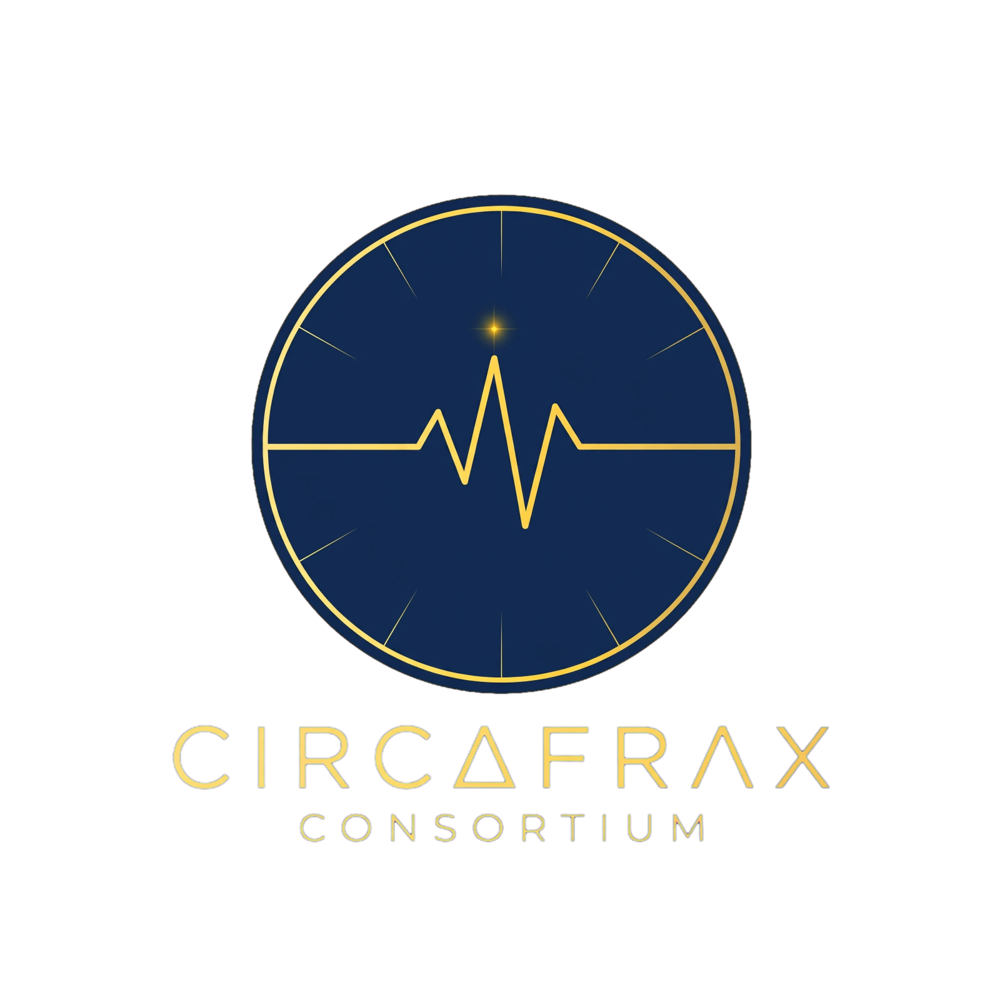
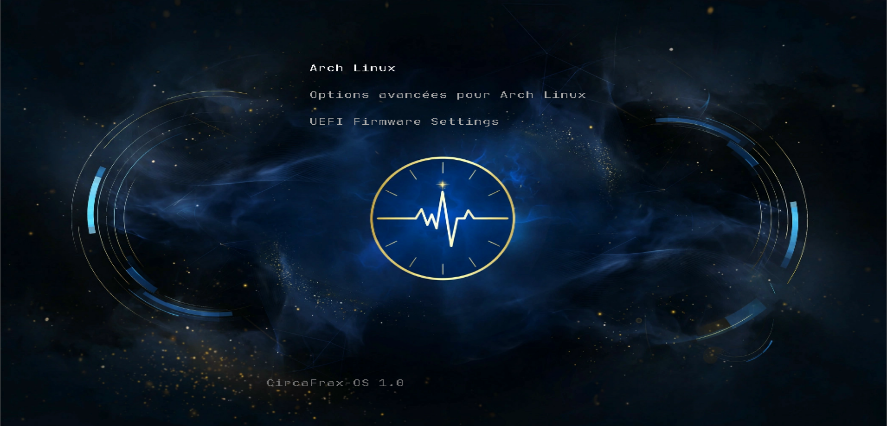
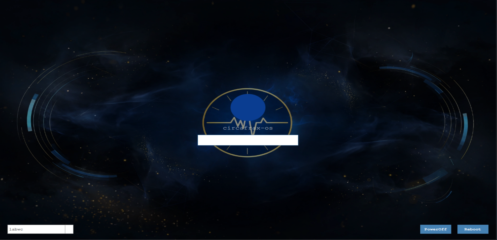
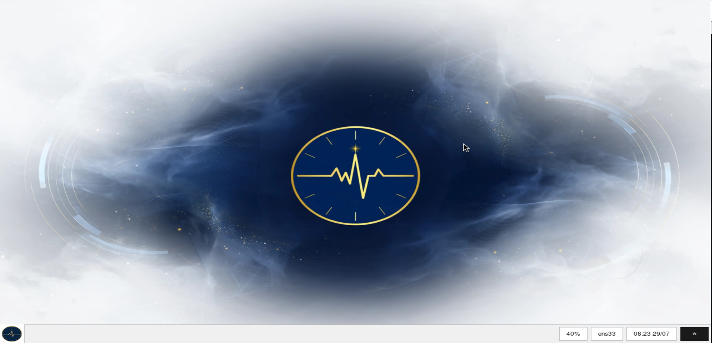

CircaFrax OS - 70% Terminé
Version 1.0 • Base figée
32 paquets
Arch pur
Live • Sans installateur
CircaFrax OS est un système Arch minimal, développé à la main, figé pour durer. Il démarre en quelques secondes en live, sans compte, sans traceur. Objectif : ressusciter vieux PC, travailler offline, maîtriser chaque paquet.



- 32 paquets audités — pas de bloat
- Boot live USB, persistance optionnelle
- Réseau coupé par défaut, outils offline
- ISO reproductible, doc incluse